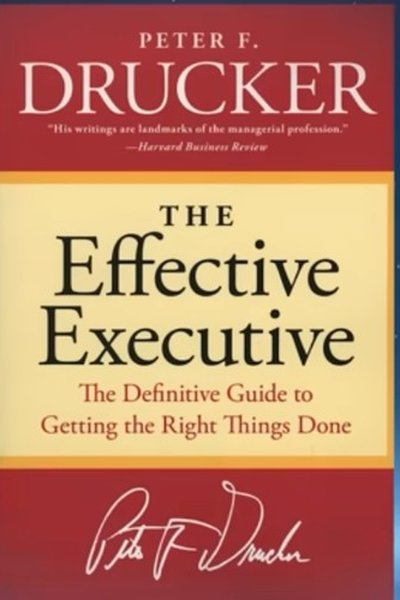

Library › Productivity
The Effective Executive — Summary & Key Lessons

The definitive guide to getting the right things done — from the man who invented modern management.
📖 OPEN THE FULL INTERACTIVE BREAKDOWN →🌐 Read it in Hindi, Hinglish, Gujarati, Tamil & 22 more languages — free, with audio.
💡 The Big Idea
Peter Drucker — the father of modern management — asked why some executives achieve results while equally smart ones don't. His answer: effectiveness is a set of learnable habits, not an inborn gift. The effective executive (1) manages their time deliberately, (2) focuses on contribution rather than effort, (3) builds on strengths (their own, their boss's, their team's), (4) concentrates on a few major areas where excellence produces results, and (5) makes effective decisions. Written in 1967, it remains the most practical management book ever published.
🧠 The 6 Key Lessons
Lesson 1: Know Thy Time
Managing Time
The effective executive's first habit: record where time actually goes (not where you think it goes), manage the time you control (consolidate it into large blocks), and eliminate the time-wasters — activities that produce nothing, that others can do, and that steal from others' time. Time is the one resource you can't buy more of.
📖 Example: Drucker's own practice: every executive he advised kept a time log for weeks — and nearly all were shocked that meetings, travel and interruptions ate 60–80% of the time they thought they spent on work. The log, not the intention, was the truth. Read the full example →
⚡ Do this: Log your time in 30-minute blocks for 3 days. Circle everything that produced no result — and cut one of those activities next week.
Lesson 2: Focus on Contribution
Focus on Contribution
Effective people look outward: they ask 'what results are required of me?' not 'how hard am I working?' The focus on contribution — to results, to the organization, to other people's effectiveness — transforms everything: meetings become purposeful, relationships become productive, and promotion follows automatically because you're the person things get done through.
📖 Example: Drucker tells of two equally capable men in a company: one was 'brilliant but unproductive,' the other 'ordinary but effective' — the second was promoted because he asked what the organization needed and delivered it, while the first waited to be appreciated. Read the full example →
⚡ Do this: Rewrite your job description as a contribution: 'The results I produce are ___.' If you can't finish the sentence, that's today's problem.
Lesson 3: Build on Strengths
Build on Strengths
Effective executives don't spend their lives fixing weaknesses — they build on strengths: their own, their superiors', their colleagues', and their subordinates'. The question is never 'what can't he do?' but 'what can he do exceptionally well?' Weaknesses are managed (made irrelevant) while strengths are deployed. This is why great teams look weird on paper: everyone is doing what they're great at.
📖 Example: Drucker cites Lincoln, who put his fiercest rivals — men with strengths he lacked — in his cabinet, and the manager who staffed his department with people whose strengths complemented rather than resembled his own. Read the full example →
⚡ Do this: List your top 3 strengths and your team's top 3. For one month, assign work by strength — and stop assigning your own time to your weaknesses.
Lesson 4: First Things First — and Second Things Not at All
First Things First
The effective executive concentrates: one thing at a time, the first thing first, and the second thing — not at all (or later). Doing many things a little is the definition of ineffectiveness. Priorities are not decided by pressure (the urgent) but by importance (the consequential); procrastination on the important is the executive's deadliest sin.
📖 Example: Drucker's rule from his consulting: executives who scheduled one 90-minute block for the truly important task each morning accomplished more in a week than their colleagues did in a month of fragmented urgency. The urgent-but-trivial stuff waited. Read the full example →
⚡ Do this: Name your #1 priority for the quarter. Schedule a daily 90-minute block for it — and let the urgent-but-trivial queue.
Lesson 5: Effective Decisions: Opinions First, Facts Later
Decision Making
Drucker's decision doctrine: start with opinions, not facts — because facts are only defined once you have a hypothesis to test. Then: ask whether the decision is needed at all, define the problem in terms of the essential (not symptoms), find the boundary conditions (what must be true for this to work), and build disagreement into the process — no dissent, no decision.
📖 Example: Drucker insisted every major decision needs a devil's advocate: decisions made in unanimous agreement are usually unexamined. He cites decisions like GM's, which succeeded precisely because the alternatives were argued to death before commitment. Read the full example →
⚡ Do this: Before your next decision, write: the problem (one sentence), the boundary conditions (what must be true), and one person who disagrees — go hear their case.
Lesson 6: Make Strength Productive — Build on What People Do Well
Making Strength Productive
Drucker's management principle: effective executives focus on strengths — their own, their team's and their organization's — and treat weaknesses as constraints to be worked around, not projects to fix. You cannot build performance on weakness; you can only build on strength. The question is never 'what's wrong with this person?' but 'what can they do excellently?'
📖 Example: Drucker advised appointing people for what they can do rather than what they can't: the brilliant but disorganized researcher was paired with a meticulous assistant, and the combination outperformed any 'well-rounded' hire. Strengths deployed deliberately… Read the full example →
⚡ Do this: List your team's top three strengths and redesign one task assignment so each person does more of what they're best at.
✅ 5-Step Action Plan
- Time-log 3 days; cut one zero-result activity.
- Write your contribution sentence: 'The results I produce are ___.'
- Deploy strengths for a month; stop assigning time to weaknesses.
- Block a daily 90 minutes for your #1 priority.
- Decide with dissent: write boundary conditions, hear the skeptic.
⚠️ When This Doesn't Work
Drucker's 'manage your time, focus on contribution' is the original executive classic — and Barings is the warning that effectiveness has a blind spot: Barings' executives managed time impeccably, focused on contribution, delegated with textbook discipline — and delegated the one thing that must never be delegated: independent verification of a rogue trader's positions, until £827 million and the bank's 233-year history vanished. Drucker teaches you to be effective at what you do; he underweights that you must also be effective at what you refuse to delegate. Effectiveness includes the boring, unglamorous control.
💀 The Graveyard Proves It
⚖️ The Salem Panic — When Fear Became Evidence: 20 Dead on 'Spectral' Testimony. Burn: 20 executed; a society's shame. Read the full case study →
💬 Best Quotes from The Effective Executive
- “Effectiveness is a habit — that is, a complex of practices.”
- “The effective executive focuses on contribution. He looks up from his work and outward toward goals.”
- “Do first things first — and second things not at all.”
Interactive version: mark lessons as read, listen in your language, share quote cards.